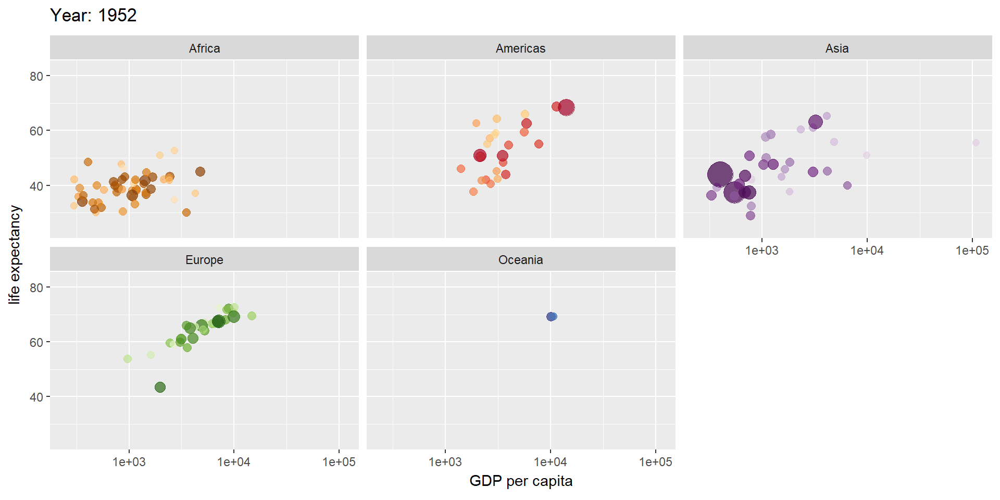
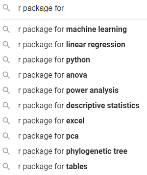
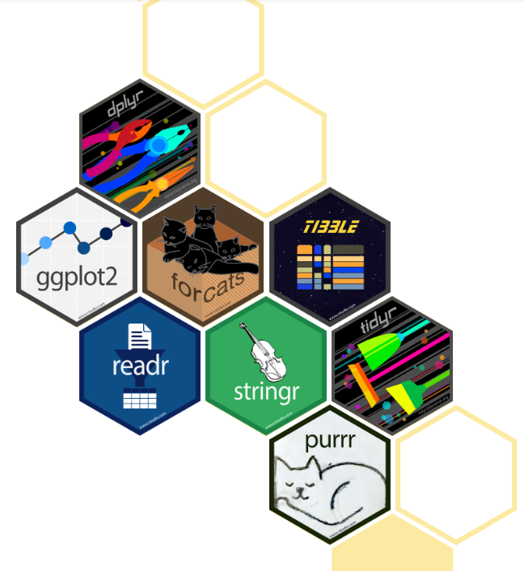
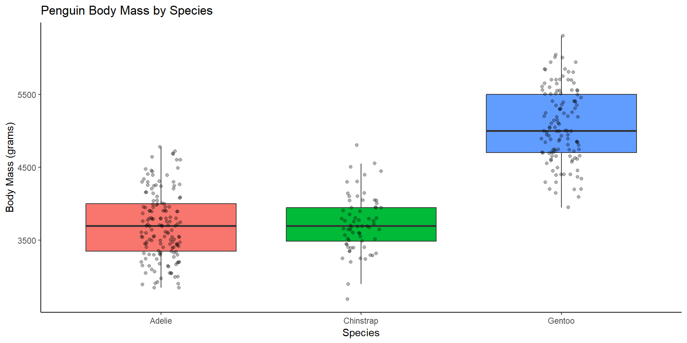
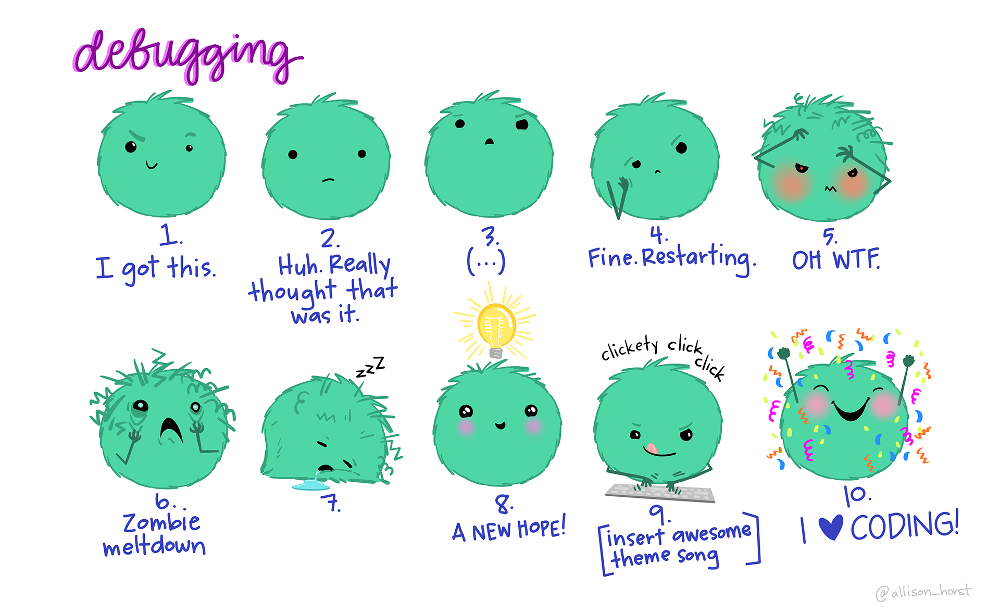
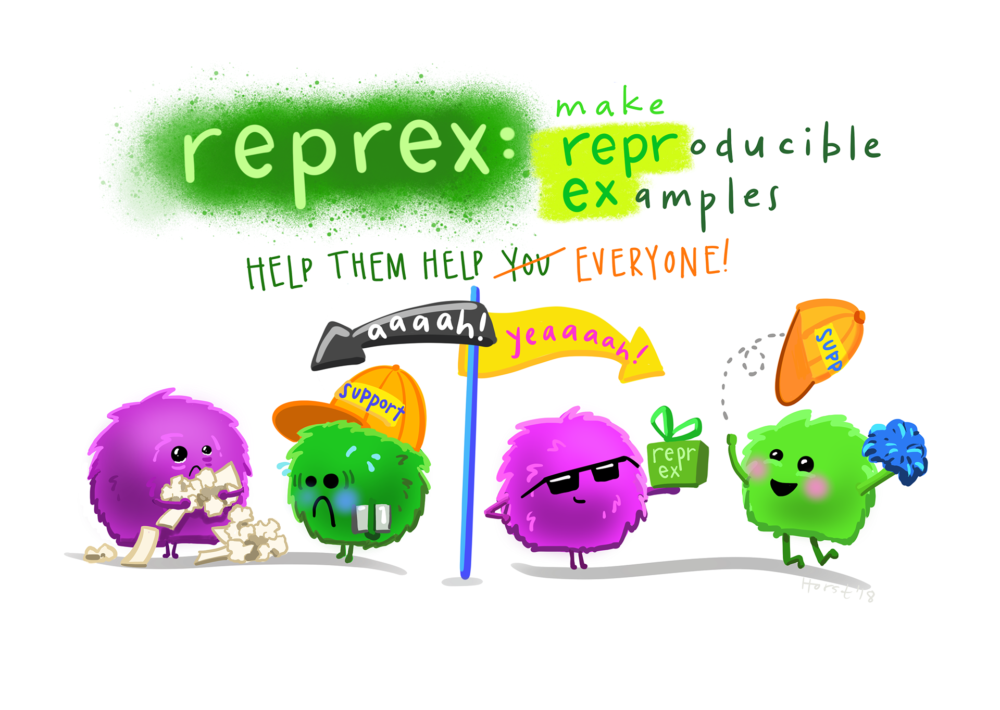

Attaching package: 'zoo'The following objects are masked from 'package:base':
as.Date, as.Date.numeric
Data Wrangling and Exploring Data with R
Overview
Exploratory Data Analysis

The Rent Board uses R to clean and join parcel assessor, DBI, housing inventory and rent board fee data.
DataSF uses R to manage and publish the San Francisco Population and Demographic Census Data.
DPH uses R to clean, geocode, and analyze survey and patient data.
OEWD uses R to make maps, read data from Salesforce, Airtable, and other third-party systems and APIs, and build robust data pipelines.
You will use R to…
“All Aboard! Exploring the Amtrak Passenger Rail System” (table) (code)
“Locating neighborhood diversity in the American Metropolis” (app) (code)
ggplot2 and extensions

(Live)
Use R Projects because:
WARNING: Rtools is required to build R packages but is not currently installed. Please download and install the appropriate version before proceeding:Rtools includes a handful of ‘compilers’ for installing packages ‘from source’ on Windows. In brief, you might need to install a package ‘from source’ because the usual ‘binaries’ for a required version are not available. If you’re on Windows, it’s best to install Rtools.
See here for a helpful discussion on installing R packages ‘from source’.
Messages, warnings, and errors are three different ways R communicates with the user.
A message is merely informative information upon successful execution.
Attaching package: 'zoo'The following objects are masked from 'package:base':
as.Date, as.Date.numericA warning warns that something less-than-ideal might have occurred upon successful execution.
An error means something is wrong, and the code is not executed.
Variable names can’t include spaces and must start with a letter.
[1] 5[1] 4[1] 9[1] 82 89 92 75 74 99Tip
c() is a function that ‘concatenates’ a vector. More on vectors in a bit!
Functions are pre-defined code that accomplish one specific task. A function has two components: (1) the name of the function; and (2) the input or ‘arguments’. The value returned is called the ‘output.’ Running or executing a function is called ‘calling’ a function.
[1] NA[1] 10.33333Types
Types
Types
Types
Factors are used for categorical, ‘ordinal’ variables.
Types
A vector is a one dimensional collection of elements of the same class.
[1] 94 83 79 55 65[1] "apples" "carrots" "ice cream" "hot sauce"[1] TRUE TRUE FALSE FALSEImportant
Be wary of R’s implicit coercion
Types
Elements can be accessed using ‘subscripts’ or ‘indices’, which are specified using brackets:
Types
A matrix is a two-dimensional collection of elements of the same type.
Types
A data frame is a table made of equal length vectors.
x y z
1 1 5 a
2 2 6 b
3 3 7 ciris - measurements of iris sepal and petal lengths/widths.
'data.frame': 150 obs. of 5 variables:
$ Sepal.Length: num 5.1 4.9 4.7 4.6 5 5.4 4.6 5 4.4 4.9 ...
$ Sepal.Width : num 3.5 3 3.2 3.1 3.6 3.9 3.4 3.4 2.9 3.1 ...
$ Petal.Length: num 1.4 1.4 1.3 1.5 1.4 1.7 1.4 1.5 1.4 1.5 ...
$ Petal.Width : num 0.2 0.2 0.2 0.2 0.2 0.4 0.3 0.2 0.2 0.1 ...
$ Species : Factor w/ 3 levels "setosa","versicolor",..: 1 1 1 1 1 1 1 1 1 1 ...mtcars - aspects of automobile design and performance for 32 vehicles.
'data.frame': 32 obs. of 11 variables:
$ mpg : num 21 21 22.8 21.4 18.7 18.1 14.3 24.4 22.8 19.2 ...
$ cyl : num 6 6 4 6 8 6 8 4 4 6 ...
$ disp: num 160 160 108 258 360 ...
$ hp : num 110 110 93 110 175 105 245 62 95 123 ...
$ drat: num 3.9 3.9 3.85 3.08 3.15 2.76 3.21 3.69 3.92 3.92 ...
$ wt : num 2.62 2.88 2.32 3.21 3.44 ...
$ qsec: num 16.5 17 18.6 19.4 17 ...
$ vs : num 0 0 1 1 0 1 0 1 1 1 ...
$ am : num 1 1 1 0 0 0 0 0 0 0 ...
$ gear: num 4 4 4 3 3 3 3 4 4 4 ...
$ carb: num 4 4 1 1 2 1 4 2 2 4 ...See also: cars, airquality, USArrests, InsectSprays, etc.
Types
Use $ to access columns (vectors) within a data frame.
Subscripts/indices for data frames are pairs specifying the row and column numbers.
| Category | Operator | Operation | Example |
|---|---|---|---|
| Artithmetic | + | Addition | x + y |
| Artithmetic | - | Subtraction | x - y |
| Artithmetic | * | Multiplication | x * y |
| Artithmetic | / | Division | x / y |
| Artithmetic | ^ | Exponent | x ^ y |
| Artithmetic | %% | Modulus (Remainder from division) | x %% y |
| Comparison | == | Equal | x == y |
| Comparison | != | Not equal | x != y |
| Comparison | > | Greater than | x > y |
| Comparison | < | Less than | x < y |
| Comparison | >= | Greater than or equal to | x >= y |
| Comparison | <= | Less than or equal to | x <= y |
| Logical | & | AND | x & y |
| Logical | | | OR | x | y |
| Logical | ! | NOT | !(x > y) |
| Logical | %in% | IN | x %in% y |
| Sequence | : | Sequence | 1:10 |
Many of R’s operations are ‘vectorized’, meaning a given operation will operate on each element of a vector without explicit specification.
Packages extend R’s functionality beyond the functions available in the ‘base’ version.
Before you can use the functions from a package, the package must first be installed.
After a package has been installed, it can then be loaded into your session.
The Comprehensive R Archive Network serves as a repository for most packages (21,1145 as of August 2024).

“The tidyverse is an collection of R packages designed for data science. All packages share an underlying design philosophy, grammar, and data structures.”

Rows: 344 Columns: 8
── Column specification ──────────────────────────────────────────────────────────────────────────────────────────────────────────────
Delimiter: ","
chr (3): species, island, sex
dbl (5): bill_length_mm, bill_depth_mm, flipper_length_mm, body_mass_g, year
ℹ Use `spec()` to retrieve the full column specification for this data.
ℹ Specify the column types or set `show_col_types = FALSE` to quiet this message.library(RSocrata)
crashes <- read.socrata("https://data.sfgov.org/resource/dau3-4s8f.csv")
# crashes <- read_csv("https://data.sfgov.org/resource/dau3-4s8f.csv")
glimpse(crashes)Rows: 333
Columns: 28
$ unique_id <int> 1, 2, 4, 16, 17, 20240304, 20241252, 20240391, 2…
$ case_id_fkey <chr> "140236301", "140755533", "140365546", "15056204…
$ latitude <dbl> 37.71041, 37.72548, 37.74826, 37.77730, 37.77825…
$ longitude <dbl> -122.4042, -122.3942, -122.4137, -122.4197, -122…
$ collision_year <int> 2014, 2014, 2014, 2015, 2014, 2024, 2024, 2024, …
$ death_date <dttm> 2014-03-20, 2014-09-08, 2014-05-03, 2015-06-30,…
$ death_time <chr> "11:21:00", "16:38:00", "17:20:00", "06:00:00", …
$ death_datetime <dttm> 2014-03-20 11:21:00, 2014-09-08 16:38:00, 2014-…
$ collision_date <dttm> 2014-03-20, 2014-09-08, 2014-05-03, 2015-06-28,…
$ collision_time <chr> "", "05:10:00", "02:24:00", "03:52:00", "02:26:0…
$ collision_datetime <dttm> 2014-03-20 00:00:00, 2014-09-08 05:10:00, 2014-…
$ location <chr> "Bayshore Blvd near Visitation Ave", "3rd St at …
$ age <int> 82, 71, 26, 52, 53, 41, 24, 40, 25, 22, 38, 94, …
$ sex <chr> "Female", "Male", "Male", "Male", "Male", "Male"…
$ deceased <chr> "Pedestrian", "Pedestrian", "Driver", "Motorcycl…
$ collision_type <chr> "Pedestrian vs Motor Vehicle", "Pedestrian vs LR…
$ street_type <chr> "City Street", "City Street", "City Street", "Ci…
$ on_vz_hin_2017 <chr> "false", "true", "true", "true", "true", "true",…
$ in_coc_2018 <chr> "false", "true", "false", "false", "false", "tru…
$ publish <chr> "true", "true", "true", "true", "true", "true", …
$ on_vz_hin_2022 <chr> "true", "true", "true", "true", "true", "true", …
$ in_epa_2021 <chr> "false", "true", "false", "true", "true", "true"…
$ point <chr> "POINT (-122.404226037 37.710409217)", "POINT (-…
$ analysis_neighborhood <chr> "Bayview Hunters Point", "Bayview Hunters Point"…
$ supervisor_district <int> 10, 10, 9, 5, 5, 5, 6, 7, 10, 9, 7, 1, 11, 6, 9,…
$ police_district <chr> "INGLESIDE", "BAYVIEW", "MISSION", "NORTHERN", "…
$ data_as_of <dttm> 2024-09-18, 2024-09-18, 2024-09-18, 2024-09-18,…
$ data_loaded_at <dttm> 2025-04-28 09:45:20, 2025-04-28 09:45:20, 2025-…# A tibble: 344 × 4
species island sex body_mass_g
<fct> <fct> <fct> <int>
1 Adelie Torgersen male 3750
2 Adelie Torgersen female 3800
3 Adelie Torgersen female 3250
# ℹ 341 more rows# A tibble: 344 × 4
species island bill_length_mm bill_depth_mm
<fct> <fct> <dbl> <dbl>
1 Adelie Torgersen 39.1 18.7
2 Adelie Torgersen 39.5 17.4
3 Adelie Torgersen 40.3 18
# ℹ 341 more rows# A tibble: 344 × 4
bill_length_mm bill_depth_mm flipper_length_mm body_mass_g
<dbl> <dbl> <int> <int>
1 39.1 18.7 181 3750
2 39.5 17.4 186 3800
3 40.3 18 195 3250
# ℹ 341 more rows# A tibble: 344 × 8
species island bill_length_mm bill_depth_mm flipper_length_mm body_mass_g
<fct> <fct> <dbl> <dbl> <int> <int>
1 Adelie Dream 32.1 15.5 188 3050
2 Adelie Dream 33.1 16.1 178 2900
3 Adelie Torgersen 33.5 19 190 3600
# ℹ 341 more rows
# ℹ 2 more variables: sex <fct>, year <int># A tibble: 344 × 8
species island bill_length_mm bill_depth_mm flipper_length_mm body_mass_g
<fct> <fct> <dbl> <dbl> <int> <int>
1 Adelie Torgersen 39.1 18.7 181 3750
2 Adelie Torgersen 39.5 17.4 186 3800
3 Adelie Torgersen 40.3 18 195 3250
# ℹ 341 more rows
# ℹ 2 more variables: sex <fct>, year <int># A tibble: 344 × 8
species island bill_length_mm bill_depth_mm flipper_length_mm body_mass_g
<fct> <fct> <dbl> <dbl> <int> <int>
1 Gentoo Biscoe 59.6 17 230 6050
2 Chinstrap Dream 58 17.8 181 3700
3 Gentoo Biscoe 55.9 17 228 5600
# ℹ 341 more rows
# ℹ 2 more variables: sex <fct>, year <int># A tibble: 344 × 8
species island bill_length_mm bill_depth_mm flipper_length_mm body_mass_g
<fct> <fct> <dbl> <dbl> <int> <int>
1 Adelie Torgersen 39.1 18.7 181 3750
2 Adelie Torgersen 39.5 17.4 186 3800
3 Adelie Torgersen 40.3 18 195 3250
# ℹ 341 more rows
# ℹ 2 more variables: Sex <fct>, year <int># A tibble: 344 × 8
genus isle bill_length_mm bill_depth_mm flipper_length_mm body_mass_g sex
<fct> <fct> <dbl> <dbl> <int> <int> <fct>
1 Adelie Torge… 39.1 18.7 181 3750 male
2 Adelie Torge… 39.5 17.4 186 3800 fema…
3 Adelie Torge… 40.3 18 195 3250 fema…
# ℹ 341 more rows
# ℹ 1 more variable: year <int># A tibble: 3 × 1
sex
<fct>
1 male
2 female
3 <NA> # A tibble: 3 × 1
island
<fct>
1 Torgersen
2 Biscoe
3 Dream # A tibble: 5 × 2
island species
<fct> <fct>
1 Torgersen Adelie
2 Biscoe Adelie
3 Dream Adelie
# ℹ 2 more rows# A tibble: 165 × 8
species island bill_length_mm bill_depth_mm flipper_length_mm body_mass_g
<fct> <fct> <dbl> <dbl> <int> <int>
1 Adelie Torgersen 39.5 17.4 186 3800
2 Adelie Torgersen 40.3 18 195 3250
3 Adelie Torgersen 36.7 19.3 193 3450
# ℹ 162 more rows
# ℹ 2 more variables: sex <fct>, year <int># A tibble: 81 × 8
species island bill_length_mm bill_depth_mm flipper_length_mm body_mass_g
<fct> <fct> <dbl> <dbl> <int> <int>
1 Gentoo Biscoe 50 16.3 230 5700
2 Gentoo Biscoe 50 15.2 218 5700
3 Gentoo Biscoe 47.6 14.5 215 5400
# ℹ 78 more rows
# ℹ 2 more variables: sex <fct>, year <int># A tibble: 22 × 8
species island bill_length_mm bill_depth_mm flipper_length_mm body_mass_g
<fct> <fct> <dbl> <dbl> <int> <int>
1 Gentoo Biscoe 45.4 14.6 211 4800
2 Gentoo Biscoe 46.2 14.5 209 4800
3 Gentoo Biscoe 45.1 14.5 215 5000
# ℹ 19 more rows
# ℹ 2 more variables: sex <fct>, year <int># A tibble: 2 × 8
species island bill_length_mm bill_depth_mm flipper_length_mm body_mass_g
<fct> <fct> <dbl> <dbl> <int> <int>
1 Adelie Torgersen NA NA NA NA
2 Gentoo Biscoe NA NA NA NA
# ℹ 2 more variables: sex <fct>, year <int># A tibble: 342 × 8
species island bill_length_mm bill_depth_mm flipper_length_mm body_mass_g
<fct> <fct> <dbl> <dbl> <int> <int>
1 Adelie Torgersen 39.1 18.7 181 3750
2 Adelie Torgersen 39.5 17.4 186 3800
3 Adelie Torgersen 40.3 18 195 3250
# ℹ 339 more rows
# ℹ 2 more variables: sex <fct>, year <int># A tibble: 292 × 8
species island bill_length_mm bill_depth_mm flipper_length_mm body_mass_g
<fct> <fct> <dbl> <dbl> <int> <int>
1 Adelie Biscoe 37.8 18.3 174 3400
2 Adelie Biscoe 37.7 18.7 180 3600
3 Adelie Biscoe 35.9 19.2 189 3800
# ℹ 289 more rows
# ℹ 2 more variables: sex <fct>, year <int># A tibble: 292 × 8
species island bill_length_mm bill_depth_mm flipper_length_mm body_mass_g
<fct> <fct> <dbl> <dbl> <int> <int>
1 Adelie Biscoe 37.8 18.3 174 3400
2 Adelie Biscoe 37.7 18.7 180 3600
3 Adelie Biscoe 35.9 19.2 189 3800
# ℹ 289 more rows
# ℹ 2 more variables: sex <fct>, year <int># A tibble: 52 × 8
species island bill_length_mm bill_depth_mm flipper_length_mm body_mass_g
<fct> <fct> <dbl> <dbl> <int> <int>
1 Adelie Torgersen 39.1 18.7 181 3750
2 Adelie Torgersen 39.5 17.4 186 3800
3 Adelie Torgersen 40.3 18 195 3250
# ℹ 49 more rows
# ℹ 2 more variables: sex <fct>, year <int># A tibble: 52 × 8
species island bill_length_mm bill_depth_mm flipper_length_mm body_mass_g
<fct> <fct> <dbl> <dbl> <int> <int>
1 Adelie Torgersen 39.1 18.7 181 3750
2 Adelie Torgersen 39.5 17.4 186 3800
3 Adelie Torgersen 40.3 18 195 3250
# ℹ 49 more rows
# ℹ 2 more variables: sex <fct>, year <int># A tibble: 276 × 8
species island bill_length_mm bill_depth_mm flipper_length_mm body_mass_g
<fct> <fct> <dbl> <dbl> <int> <int>
1 Adelie Torgersen 39.1 18.7 181 3750
2 Adelie Torgersen 39.5 17.4 186 3800
3 Adelie Torgersen 40.3 18 195 3250
# ℹ 273 more rows
# ℹ 2 more variables: sex <fct>, year <int># A tibble: 344 × 9
species island bill_length_mm bill_depth_mm flipper_length_mm body_mass_g
<fct> <fct> <dbl> <dbl> <int> <int>
1 Adelie Torgersen 39.1 18.7 181 3750
2 Adelie Torgersen 39.5 17.4 186 3800
3 Adelie Torgersen 40.3 18 195 3250
# ℹ 341 more rows
# ℹ 3 more variables: sex <fct>, year <int>, body_mass_lb <dbl>usa_penguins <- mutate(
penguins,
body_mass_lb = body_mass_g/453.6,
flipper_length_in = flipper_length_mm/25.4
)
select(usa_penguins, species, body_mass_lb, flipper_length_in)# A tibble: 344 × 3
species body_mass_lb flipper_length_in
<fct> <dbl> <dbl>
1 Adelie 8.27 7.13
2 Adelie 8.38 7.32
3 Adelie 7.16 7.68
# ℹ 341 more rowsif_else(). Otherwise, use case_when().# A tibble: 344 × 8
species island bill_length_mm bill_depth_mm flipper_length_mm body_mass_g
<fct> <fct> <dbl> <dbl> <int> <dbl>
1 Adelie Torgersen 39.1 18.7 181 3750
2 Adelie Torgersen 39.5 17.4 186 3800
3 Adelie Torgersen 40.3 18 195 3250
# ℹ 341 more rows
# ℹ 2 more variables: sex <fct>, year <int>new_measurements <- mutate(penguins, new_body_mass_g = case_when(
island == "Biscoe" ~ body_mass_g - 50,
island == "Dream" ~ body_mass_g - 75,
island == "Torgersen" ~ body_mass_g - 100
)
)
select(new_measurements, island, body_mass_g, new_body_mass_g)# A tibble: 344 × 3
island body_mass_g new_body_mass_g
<fct> <int> <dbl>
1 Torgersen 3750 3650
2 Torgersen 3800 3700
3 Torgersen 3250 3150
# ℹ 341 more rowspenguins_with_ids <- mutate(penguins, id = paste(island, species, sex, year, sep = "-"))
select(penguins_with_ids, island, species, sex, year, id)# A tibble: 344 × 5
island species sex year id
<fct> <fct> <fct> <int> <chr>
1 Torgersen Adelie male 2007 Torgersen-Adelie-male-2007
2 Torgersen Adelie female 2007 Torgersen-Adelie-female-2007
3 Torgersen Adelie female 2007 Torgersen-Adelie-female-2007
# ℹ 341 more rows# A tibble: 344 × 8
species island bill_length_mm bill_depth_mm flipper_length_mm body_mass_g
<fct> <fct> <dbl> <dbl> <int> <int>
1 Adelie Torgersen 39.1 18.7 181 3750
2 Adelie Torgersen 39.5 17.4 186 3800
3 Adelie Torgersen 40.3 18 195 3250
# ℹ 341 more rows
# ℹ 2 more variables: sex <chr>, year <int># A tibble: 344 × 8
species island bill_length_mm bill_depth_mm flipper_length_mm body_mass_g
<fct> <fct> <dbl> <dbl> <int> <int>
1 Adelie Torgersen 39.1 18.7 181 3750
2 Adelie Torgersen 39.5 17.4 186 3800
3 Adelie Torgersen 40.3 18 195 3250
# ℹ 341 more rows
# ℹ 2 more variables: sex <chr>, year <int># A tibble: 3 × 2
sex n
<fct> <int>
1 female 165
2 male 168
3 <NA> 11# A tibble: 3 × 2
species n
<fct> <int>
1 Adelie 152
2 Chinstrap 68
3 Gentoo 124# A tibble: 8 × 3
sex species n
<fct> <fct> <int>
1 female Adelie 73
2 male Adelie 73
3 male Gentoo 61
4 female Gentoo 58
5 female Chinstrap 34
6 male Chinstrap 34
7 <NA> Adelie 6
8 <NA> Gentoo 5# A tibble: 3 × 2
island n_island_dwellers
<fct> <int>
1 Biscoe 168
2 Dream 124
3 Torgersen 52# A tibble: 2 × 2
`island == "Biscoe"` n
<lgl> <int>
1 FALSE 176
2 TRUE 168# A tibble: 3 × 2
`body_mass_g < 3000` n
<lgl> <int>
1 FALSE 333
2 TRUE 9
3 NA 2# A tibble: 1 × 1
mean_flipper_length
<dbl>
1 NAsummarize(
penguins,
mean_flipper_length = mean(flipper_length_mm, na.rm = TRUE),
mean_body_mass = mean(body_mass_g, na.rm = TRUE),
mean_bill_length = mean(bill_length_mm, na.rm = TRUE),
)# A tibble: 1 × 3
mean_flipper_length mean_body_mass mean_bill_length
<dbl> <dbl> <dbl>
1 201. 4202. 43.9penguins_grouped_by_sex <- group_by(penguins, sex)
summarize(penguins_grouped_by_sex, mean_body_mass = mean(body_mass_g, na.rm = TRUE))# A tibble: 3 × 2
sex mean_body_mass
<fct> <dbl>
1 female 3862.
2 male 4546.
3 <NA> 4006.penguins_grouped_by_sex_and_species <- group_by(penguins, sex, species)
summarize(penguins_grouped_by_sex_and_species, mean_body_mass = mean(body_mass_g, na.rm = TRUE))# A tibble: 8 × 3
# Groups: sex [3]
sex species mean_body_mass
<fct> <fct> <dbl>
1 female Adelie 3369.
2 female Chinstrap 3527.
3 female Gentoo 4680.
4 male Adelie 4043.
5 male Chinstrap 3939.
6 male Gentoo 5485.
7 <NA> Adelie 3540
8 <NA> Gentoo 4588.# A tibble: 3 × 2
sex mean_body_mass
<fct> <dbl>
1 male 4546.
2 female 3862.
3 <NA> 4006.We typically want to run numerous operations on a data frame, and saving the intermediate outputs as separate variables is tedious. The ‘pipe’ operator (%>% or |>), passes the output from one function directly into another.
Ctrl + Shift + M; Mac: Cmd + Shift + MSource: Air Traffic Passenger Statistics
air_traffic <- read.socrata("https://data.sfgov.org/resource/rkru-6vcg.csv")
# How many passengers deplaned from airlines with 'China' in their name?
air_traffic %>%
filter(
str_detect(operating_airline, "China"),
activity_type_code == "Deplaned"
) %>%
group_by(operating_airline) %>%
summarize(passengers = sum(passenger_count)) %>%
arrange(desc(passengers))
# How many flights for each operating airline in 2020?
air_traffic %>%
filter(
activity_period_start_date >= as.Date("2020-01-01") &
activity_period_start_date <= as.Date("2020-12-31")
) %>%
count(operating_airline, sort = TRUE, name = "flights") %>%
head()If a row in ‘x’ or the left-hand side matches a row in ‘y’ or the right-hand side, the columns from the y table are joined to the x table.
df1 <- tibble(x = 1:3)
df2 <- tibble(x = c(1, 2), y = c("first", "second"))
left_join(df1, df2, by = "x") # or df1 %>% left_join(df2, join_by(x))# A tibble: 3 × 2
x y
<dbl> <chr>
1 1 first
2 2 second
3 3 <NA> If a row in ‘x’ or the left-hand side has multiple matches in ‘y’ or the right-hand side, all the matching rows in y will be joined to x.
df1 <- tibble(id = 1:3)
df2 <- tibble(code = c(1, 1, 2), y = c("first", "second", "third"))
df1 %>% left_join(df2, join_by(id == code))# A tibble: 4 × 2
id y
<dbl> <chr>
1 1 first
2 1 second
3 2 third
4 3 <NA> x <- tibble(c1 = 1:3, c2 = c("x1", "x2", "x3"))
y <- tibble(c1 = c(1, 2, 4), c3 = c("y1", "y2", "y4"))
inner_join(x, y, by = join_by(c1))# A tibble: 2 × 3
c1 c2 c3
<dbl> <chr> <chr>
1 1 x1 y1
2 2 x2 y2 penguins_2007 <- penguins %>% filter(year == 2007)
penguins_2008 <- penguins %>% filter(year == 2008)
nrow(penguins_2007)[1] 110[1] 114# A tibble: 224 × 8
species island bill_length_mm bill_depth_mm flipper_length_mm body_mass_g
<fct> <fct> <dbl> <dbl> <int> <int>
1 Adelie Torgersen 39.1 18.7 181 3750
2 Adelie Torgersen 39.5 17.4 186 3800
3 Adelie Torgersen 40.3 18 195 3250
4 Adelie Torgersen NA NA NA NA
5 Adelie Torgersen 36.7 19.3 193 3450
6 Adelie Torgersen 39.3 20.6 190 3650
7 Adelie Torgersen 38.9 17.8 181 3625
8 Adelie Torgersen 39.2 19.6 195 4675
# ℹ 216 more rows
# ℹ 2 more variables: sex <fct>, year <int>flights <- read_rds("data/flights.rds")
airlines <- read_rds("data/airlines.rds")
planes <- read_rds("data/planes.rds")
airports <- read_rds("data/airports.rds")
left_join(flights, airlines, by = join_by(carrier))
flights %>%
left_join(airports, join_by(dest == faa)) %>%
select(year, month, day, origin, dest, tzone)
flights %>%
inner_join(planes, join_by(tailnum)) %>%
select(flight, month, day, type, engine)Reshape your data into something longer (increasing number of rows and decreasing the number of columns) or reshape your data into something wider (increasing the number of columns and decreasing the number of rows).
Rows: 18
Columns: 11
$ religion <chr> "Agnostic", "Atheist", "Buddhist", "Catholic", "D…
$ `<$10k` <dbl> 27, 12, 27, 418, 15, 575, 1, 228, 20, 19, 289, 29…
$ `$10-20k` <dbl> 34, 27, 21, 617, 14, 869, 9, 244, 27, 19, 495, 40…
$ `$20-30k` <dbl> 60, 37, 30, 732, 15, 1064, 7, 236, 24, 25, 619, 4…
$ `$30-40k` <dbl> 81, 52, 34, 670, 11, 982, 9, 238, 24, 25, 655, 51…
$ `$40-50k` <dbl> 76, 35, 33, 638, 10, 881, 11, 197, 21, 30, 651, 5…
$ `$50-75k` <dbl> 137, 70, 58, 1116, 35, 1486, 34, 223, 30, 95, 110…
$ `$75-100k` <dbl> 122, 73, 62, 949, 21, 949, 47, 131, 15, 69, 939, …
$ `$100-150k` <dbl> 109, 59, 39, 792, 17, 723, 48, 81, 11, 87, 753, 4…
$ `>150k` <dbl> 84, 74, 53, 633, 18, 414, 54, 78, 6, 151, 634, 42…
$ `Don't know/refused` <dbl> 96, 76, 54, 1489, 116, 1529, 37, 339, 37, 162, 13…# A tibble: 180 × 3
religion income count
<chr> <chr> <dbl>
1 Agnostic <$10k 27
2 Agnostic $10-20k 34
3 Agnostic $20-30k 60
4 Agnostic $30-40k 81
5 Agnostic $40-50k 76
6 Agnostic $50-75k 137
7 Agnostic $75-100k 122
8 Agnostic $100-150k 109
# ℹ 172 more rows# A tibble: 3 × 4
island Adelie Gentoo Chinstrap
<fct> <int> <int> <int>
1 Biscoe 44 124 NA
2 Dream 56 NA 68
3 Torgersen 52 NA NApenguins %>%
count(island, species) %>%
pivot_wider(
names_from = species,
values_from = n,
values_fill = 0
)# A tibble: 3 × 4
island Adelie Gentoo Chinstrap
<fct> <int> <int> <int>
1 Biscoe 44 124 0
2 Dream 56 0 68
3 Torgersen 52 0 0adelie_males_on_torgersen_in_2007 <- penguins %>%
filter(
species == "Adelie",
sex == "male",
island == "Torgersen",
year == "2007"
) %>%
select(bill_length_mm:body_mass_g)
write_csv(adelie_males_on_torgersen_in_2007, "data/adelie_males_on_torgersen_in_2007.csv")
write_rds(adelie_males_on_torgersen_in_2007, "data/adelie_males_on_torgersen_in_2007.rds")
library(writexl)
write_xlsx(adelie_males_on_torgersen_in_2007, "data/adelie_males_on_torgersen_in_2007.xlsx")
library(gt)
penguins %>%
group_by(island, species, sex) %>%
summarize(
mean_body_mass = mean(body_mass_g, na.rm = TRUE)
) %>%
ungroup() %>%
drop_na(sex) %>%
pivot_wider(
names_from = sex,
values_from = mean_body_mass
) %>%
mutate(island = paste("On", island, "island")) %>%
rename(
Island = island,
Species = species,
Female = female,
Male = male
) %>%
gt(
groupname_col = "Island",
rowname_col = "Species"
) %>%
tab_style(
style = list(cell_text(align = "right")),
locations = cells_stub(rows = TRUE)
) %>%
tab_header(
title = "Penguin Body Mass",
subtitle = "Adult penguins near Palmer Station"
)| Penguin Body Mass | ||
|---|---|---|
| Adult foraging penguins near Palmer Station | ||
| Female | Male | |
| On Biscoe island | ||
| Adelie | 3369.318 | 4050.000 |
| Gentoo | 4679.741 | 5484.836 |
| On Dream island | ||
| Adelie | 3344.444 | 4045.536 |
| Chinstrap | 3527.206 | 3938.971 |
| On Torgersen island | ||
| Adelie | 3395.833 | 4034.783 |
Be organized and be consistent!
├── data-academy-intro-to-r.Rproj
└── README.Rmd
├── README.md
├── data
│ ├── airlines.rds
│ ├── airports.rds
│ ├── flights.rds
│ ├── incidents_raw.rds
│ ├── penguins.csv
│ ├── penguins.rds
│ ├── penguins.xlsx
│ ├── planes.rds
│ └── relig_income.rds
├── R
│ ├── eda.R
│ ├── install_packages.R
│ ├── script.R
│ └── test.R
├── Reports
│ ├── monthly_report.qmd
│ ├── serious_analysis.qmd
├── SQL
│ ├── query1.sql
│ ├── query2.sqlCCSF R Users Teams Channel
Stackoverflow
Posit Community
Twitter/X/Mastadon/BlueSky


dplyr selection helpers:
starts_with()/ends_with()contains()/matches()first_col()/last_col()everything()across()where()Reports and dashboards: Tutorial: Hello, Quarto
Everything about ggplot2: ggplot2: Elegant Graphics for Data Analysis
Everything about gt: Introduction to Creating gt tables
Writing good functions: Chapter 19, ‘Functions’, in R for Data Science
Working with databases: Chapter 21, ‘Databases’, in R for Data Science
Spatial Stuff: Geocomputation in R
Watch and learn from a pro: David Robinson’s Tidy Tuesday screencasts
Interactive JavaScript visualizations in R: htmlwidgets gallery
Interactive web applications: Welcome to Shiny
Package development: R packages
Automating data pipelines: The targets user manual
Make any chart: The R Graph Gallery
Give us your feedback! (Please respond to the survey sent out after class)